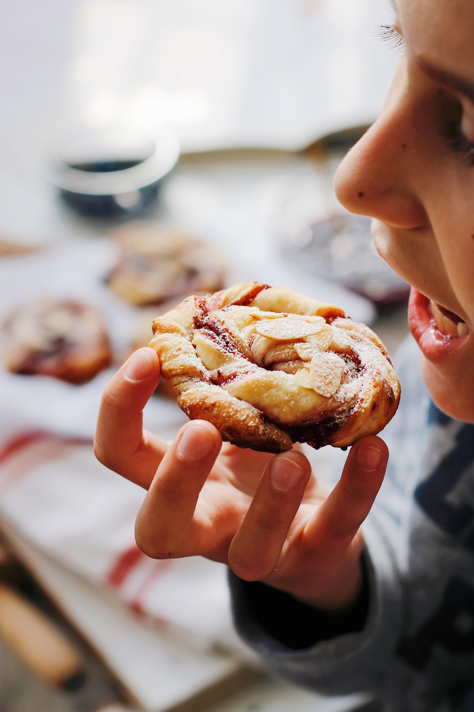

Grateful Bread
At grateful bread, there is no such thing as a lack of appreciation for food. Our team radiates gratitude and love into each and every one of our creations. In the heart of downtown San Luis Obispo, our store opens every beautiful morning from 7 am to 4 pm. From breakfast coffees and croissants to paninis for lunch, we are a full-service daily bakeshop. Famously known for our bread, we offer full loaves and bread-centered meals for sale.
